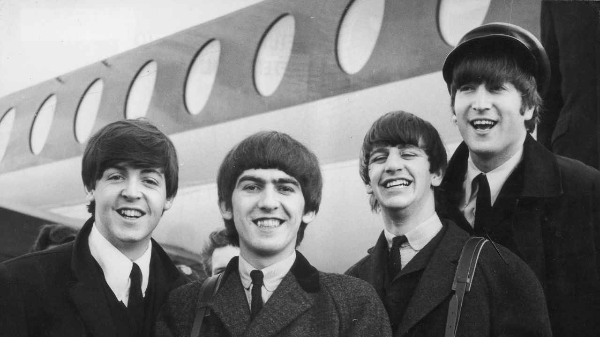
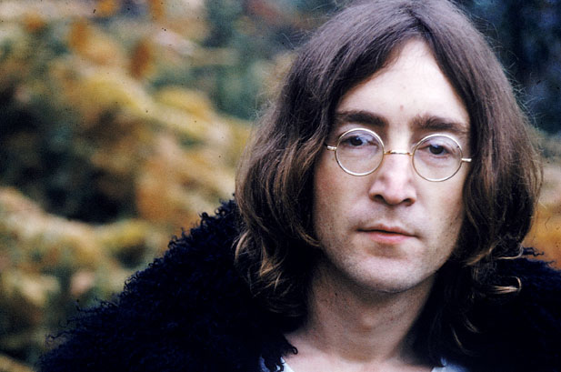
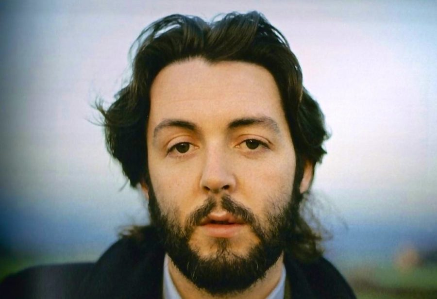
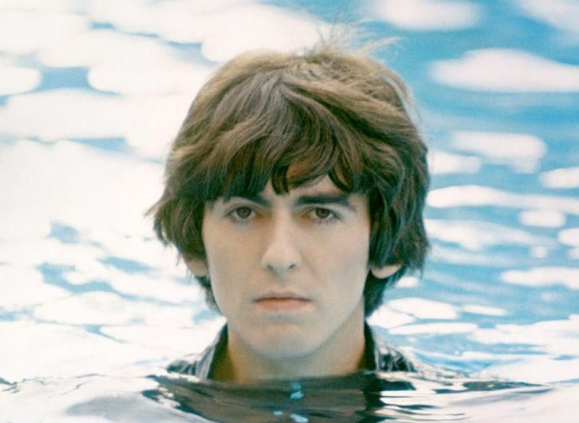
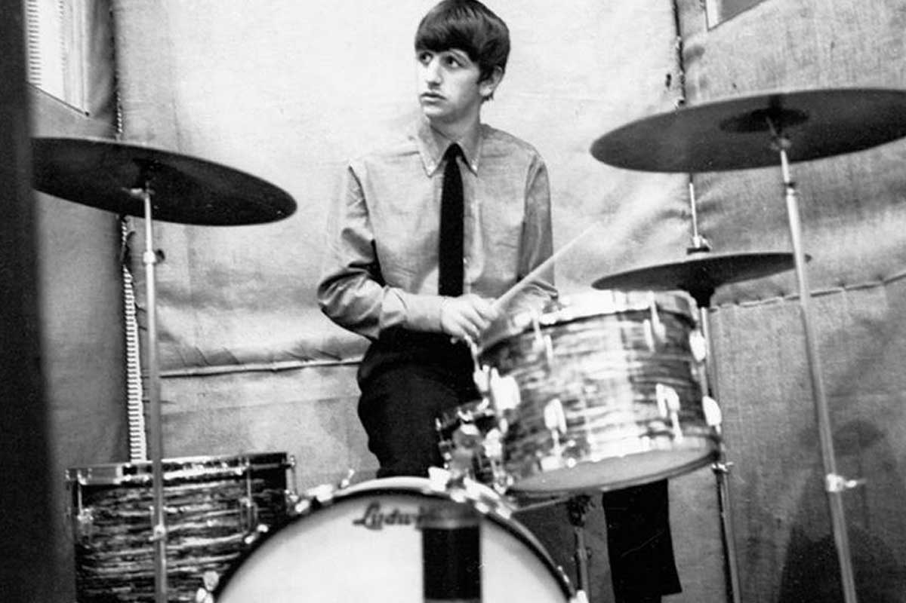
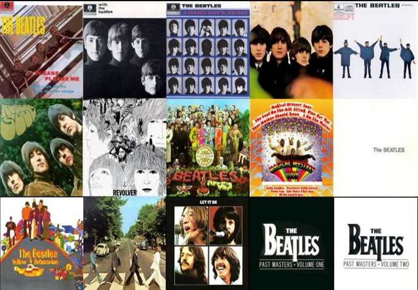

QUEM SÃO OS BEATLES?
The Beatles foi uma banda de rock britânica formada em 1960 na cidade de Liverpool. Formada por John Lennon, Paul McCartney, George Harrison e Ringo Starr, é considerada a banda mais influente de todos os tempos. O grupo fez parte do desenvolvimento da contracultura da década de 1960 e do reconhecimento da música popular como forma de arte. Enraizados do skiffle, beat e rock and roll da década de 1950, seu som incorporava elementos da música clássica e pop tradicional de maneiras inovadoras; a banda mais tarde explorou estilos musicais que variavam de baladas e música indiana a psicodelia e hard rock. Como pioneiros em gravação, composição e apresentação artística, o grupo revolucionou muitos aspectos da indústria da música e foi frequentemente divulgado como líder dos movimentos juvenis e socioculturais da época.
CONHEÇA CADA INTEGRANTE
JOHN LENNON
John Winston Ono Lennon (Liverpool, 9 de outubro de 1940 – Nova Iorque, 8 de dezembro de 1980) foi um cantor, compositor e ativista da paz britânico que fundou os Beatles, a banda de maior sucesso comercial na história da música popular. Sua parceria de composição com o colega de banda Paul McCartney foi uma das mais célebres da história da música. Juntamente com George Harrison e Ringo Starr, o grupo alcançou fama mundial durante a década de 1960. Em 1969, Lennon começou a Plastic Ono Band com sua segunda esposa, Yoko Ono, e continuou a seguir carreira solo após a separação dos Beatles em abril de 1970.
PAUL MCCARTNEY
Sir James Paul McCartney (Liverpool, 18 de junho de 1942) é um cantor, compositor, multi-instrumentista, empresário, produtor musical, cinematográfico e ativista dos direitos dos animais britânico. McCartney alcançou fama mundial como membro da banda de rock britânica The Beatles, com John Lennon, George Harrison e Ringo Starr. Lennon e McCartney foram uma das mais influentes e bem sucedidas parcerias musicais de todos os tempos, "escrevendo as canções mais populares da história do rock" . Após a dissolução dos Beatles em 1970, McCartney lançou-se numa carreira solo de sucessos, formou uma banda com sua primeira mulher Linda McCartney, os Wings. Ele também trabalhou com música clássica, eletrônica e trilhas sonoras.
GEORGE HARRISON
George Harrison (Liverpool, 25 de fevereiro de 1943 – Los Angeles, 29 de novembro de 2001) foi um guitarrista, cantor, compositor, produtor musical e cinematográfico britânico que obteve fama internacional como guitarrista dos Beatles. Geralmente chamado de "o Beatle quieto", Harrison aderiu ao hinduísmo e ajudou a ampliar os horizontes dos outros Beatles assim como seu público ocidental ao incorporar instrumentos indianos na música do grupo. Embora a maioria das canções da banda fossem escritas por John Lennon e Paul McCartney, a maioria dos álbuns dos Beatles, a partir de 1965, continham, pelo menos, duas composições de Harrison. Suas músicas para o grupo incluem "Taxman", "Within You Without You", "While My Guitar Gently Weeps", "Here Comes the Sun" e "Something". Esta última se tornou a segunda música mais regravada dos Beatles, perdendo apenas para "Yesterday".
RINGO STARR
Richard Starkey (Liverpool, 7 de julho de 1940), mais conhecido pelo seu nome artístico Ringo Starr, é um músico, compositor e ator britânico, que ganhou fama como baterista dos Beatles. Além de atuar como baterista, Starr foi intérprete de canções de sucesso dos Beatles, como "With a Little Help from My Friends", "Yellow Submarine", "Good Night" e seus covers de "Boys" e "Act Naturally". Ele também compôs e cantou "Don't Pass Me By" e "Octopus's Garden", e é creditado como co-compositor em outras, incluindo "What Goes On".
DISCOGRAFIA
-
Please Please Me (1963) -
With The Beatles (1963) -
A Hard Day's Night (1964) -
Beatles For Sale (1964) -
Help! (1965) -
Rubber Soul (1965) -
Revolver (1966) -
Sgt. Pepper's Lonely Hearts Club Band (1967) -
Magical Mystery Tour (1967) -
The Beatles (1968) -
Yellow Submarine (1969) -
Abbey Road (1969) -
Let It Be (1970)